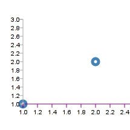
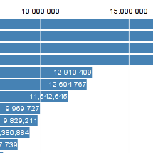
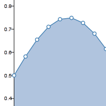

This is a fork of the d3 (http://d3js.org/) Javascript data library to allow d3 to work as elegantly with the Raphael (http://raphaeljs.com/) vector drawing library as d3 natively does with SVG.
Because Internet Explorer <= 8 doesn't support SVG, and thus doesn't support d3.
Scatter Plot Example:

Bar Chart Example:

Area Chart Example:

More examples to come.
Look at the source of the example projects above.
Specifically, Raphael does VML for IE8 and SVG for everyone else.
If you find d3 and raphael useful together, please help! This project only exists because of the awesome work of the open source community.
This project wouldn't mean anything without the work of Mike Bostock (http://bost.ocks.org/mike/) on d3 and Dmitry Baranovskiy (http://dmitry.baranovskiy.com/) on Raphael.